## 'data.frame': 870 obs. of 36 variables:
## $ ID : int 1 2 3 4 5 6 7 8 9 10 ...
## $ Age : int 32 40 35 32 24 27 41 37 34 34 ...
## $ Attrition : Factor w/ 2 levels "No","Yes": 1 1 1 1 1 1 1 1 1 1 ...
## $ BusinessTravel : Factor w/ 3 levels "Non-Travel","Travel_Frequently",..: 3 3 2 3 2 2 3 3 3 2 ...
## $ DailyRate : int 117 1308 200 801 567 294 1283 309 1333 653 ...
## $ Department : Factor w/ 3 levels "Human Resources",..: 3 2 2 3 2 2 2 3 3 2 ...
## $ DistanceFromHome : int 13 14 18 1 2 10 5 10 10 10 ...
## $ Education : int 4 3 2 4 1 2 5 4 4 4 ...
## $ EducationField : Factor w/ 6 levels "Human Resources",..: 2 4 2 3 6 2 4 2 2 6 ...
## $ EmployeeCount : int 1 1 1 1 1 1 1 1 1 1 ...
## $ EmployeeNumber : int 859 1128 1412 2016 1646 733 1448 1105 1055 1597 ...
## $ EnvironmentSatisfaction : int 2 3 3 3 1 4 2 4 3 4 ...
## $ Gender : Factor w/ 2 levels "Female","Male": 2 2 2 1 1 2 2 1 1 2 ...
## $ HourlyRate : int 73 44 60 48 32 32 90 88 87 92 ...
## $ JobInvolvement : int 3 2 3 3 3 3 4 2 3 2 ...
## $ JobLevel : int 2 5 3 3 1 3 1 2 1 2 ...
## $ JobRole : Factor w/ 9 levels "Healthcare Representative",..: 8 6 5 8 7 5 7 8 9 1 ...
## $ JobSatisfaction : int 4 3 4 4 4 1 3 4 3 3 ...
## $ MaritalStatus : Factor w/ 3 levels "Divorced","Married",..: 1 3 3 2 3 1 2 1 2 2 ...
## $ MonthlyIncome : int 4403 19626 9362 10422 3760 8793 2127 6694 2220 5063 ...
## $ MonthlyRate : int 9250 17544 19944 24032 17218 4809 5561 24223 18410 15332 ...
## $ NumCompaniesWorked : int 2 1 2 1 1 1 2 2 1 1 ...
## $ Over18 : Factor w/ 1 level "Y": 1 1 1 1 1 1 1 1 1 1 ...
## $ OverTime : Factor w/ 2 levels "No","Yes": 1 1 1 1 2 1 2 2 2 1 ...
## $ PercentSalaryHike : int 11 14 11 19 13 21 12 14 19 14 ...
## $ PerformanceRating : int 3 3 3 3 3 4 3 3 3 3 ...
## $ RelationshipSatisfaction: int 3 1 3 3 3 3 1 3 4 2 ...
## $ StandardHours : int 80 80 80 80 80 80 80 80 80 80 ...
## $ StockOptionLevel : int 1 0 0 2 0 2 0 3 1 1 ...
## $ TotalWorkingYears : int 8 21 10 14 6 9 7 8 1 8 ...
## $ TrainingTimesLastYear : int 3 2 2 3 2 4 5 5 2 3 ...
## $ WorkLifeBalance : int 2 4 3 3 3 2 2 3 3 2 ...
## $ YearsAtCompany : int 5 20 2 14 6 9 4 1 1 8 ...
## $ YearsInCurrentRole : int 2 7 2 10 3 7 2 0 1 2 ...
## $ YearsSinceLastPromotion : int 0 4 2 5 1 1 0 0 0 7 ...
## $ YearsWithCurrManager : int 3 9 2 7 3 7 3 0 0 7 ...## [1] "There are 870 Employees in the data set"## [1] "Number of Employees that quit: 140"## [1] "Number of Employees that did not quit: 730"## [1] "Percent of Employees that quit: 16.09%"## [1] "Percent of Employees that did not quit: 83.91%"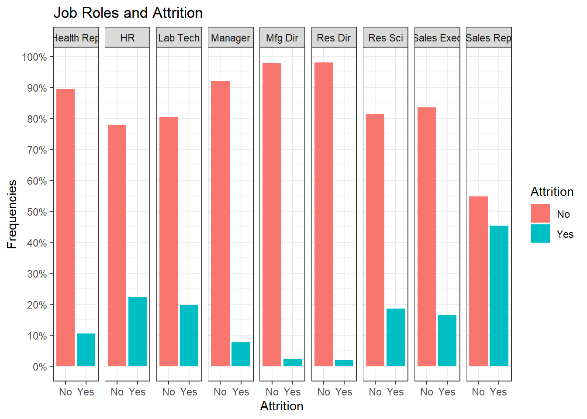
## [,1]
## Age -0.149383577
## BusinessTravel -0.006125598
## DailyRate -0.033793125
## Department 0.087031988
## DistanceFromHome 0.087136293
## Education -0.049442357
## EducationField 0.026142151
## EmployeeCount NA
## EmployeeNumber -0.022793834
## EnvironmentSatisfaction -0.077325405
## Gender 0.025250336
## HourlyRate 0.036554178
## ID 0.047266995
## JobInvolvement -0.187793409
## JobLevel -0.162136444
## JobRole 0.090538602
## JobSatisfaction -0.107520935
## MaritalStatus 0.197014951
## MonthlyIncome -0.154914955
## MonthlyRate -0.043232173
## NumCompaniesWorked 0.061018887
## Over18 NA
## OverTime 0.272036591
## PercentSalaryHike 0.015328069
## PerformanceRating 0.015333837
## RelationshipSatisfaction -0.039646611
## StandardHours NA
## StockOptionLevel -0.148680303
## TotalWorkingYears -0.167206122
## TrainingTimesLastYear -0.062726088
## WorkLifeBalance -0.089789709
## YearsAtCompany -0.128754060
## YearsInCurrentRole -0.156215707
## YearsSinceLastPromotion -0.004573321
## YearsWithCurrManager -0.146782245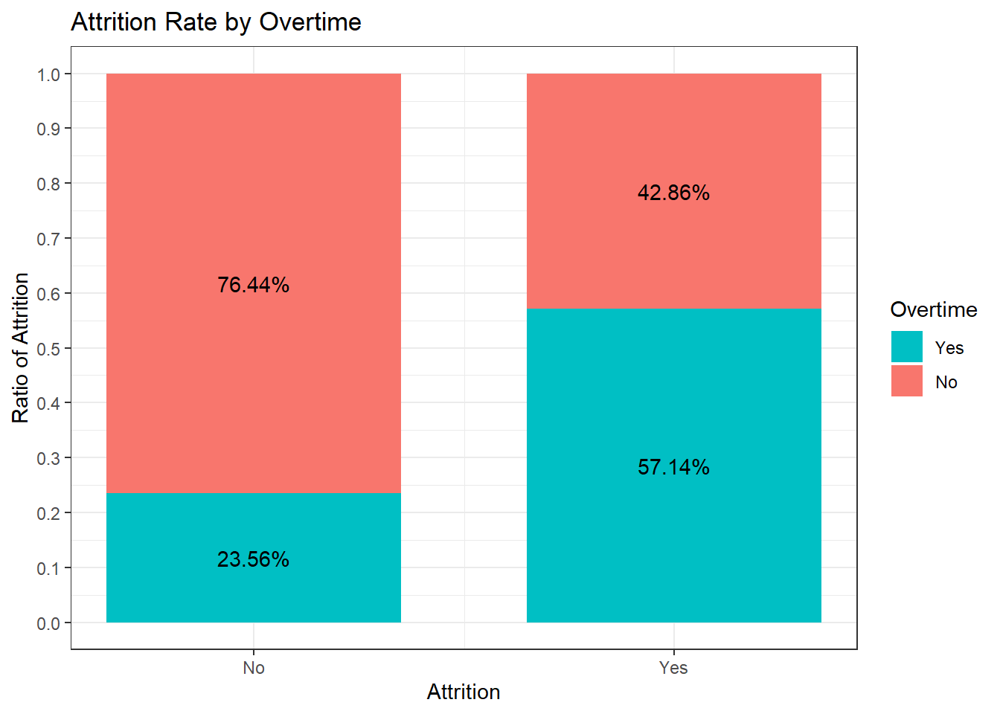
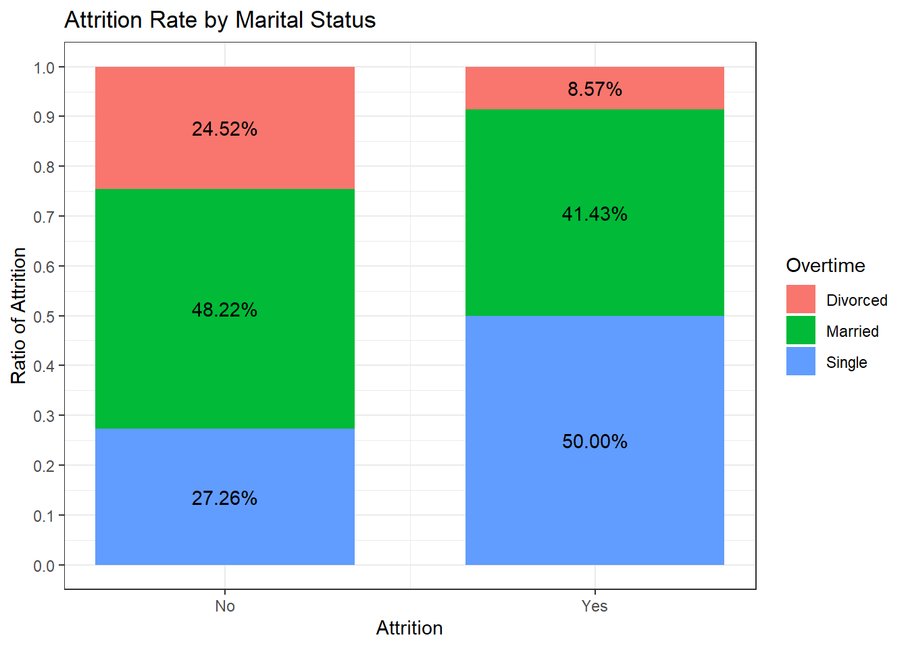
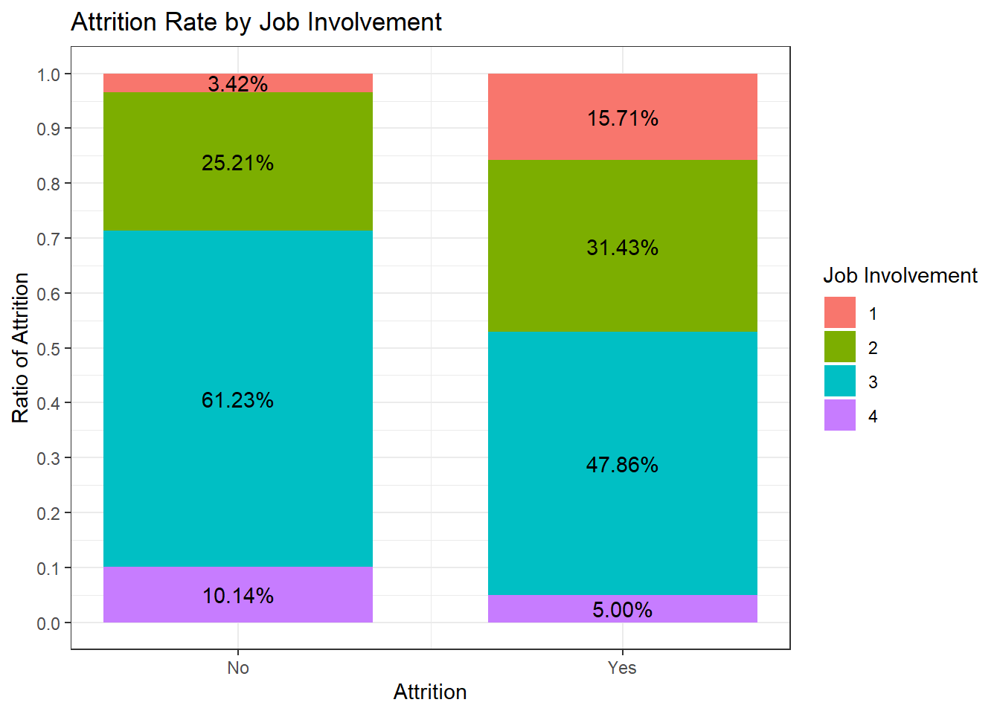
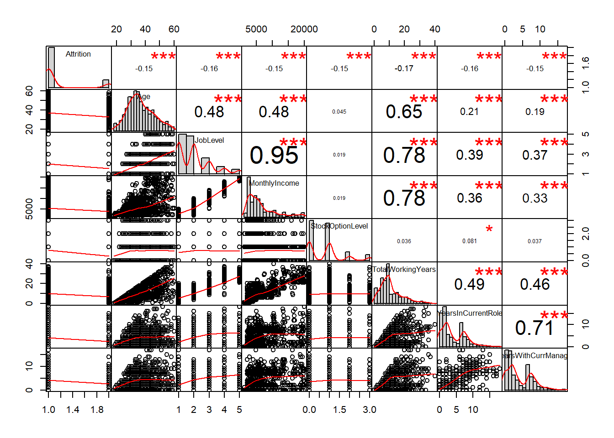
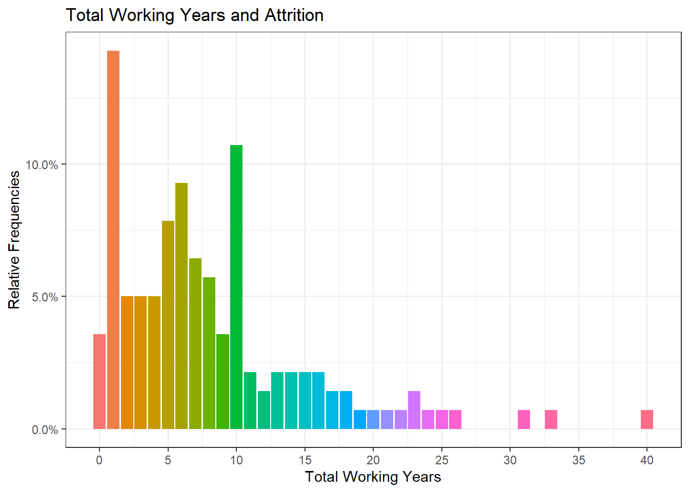
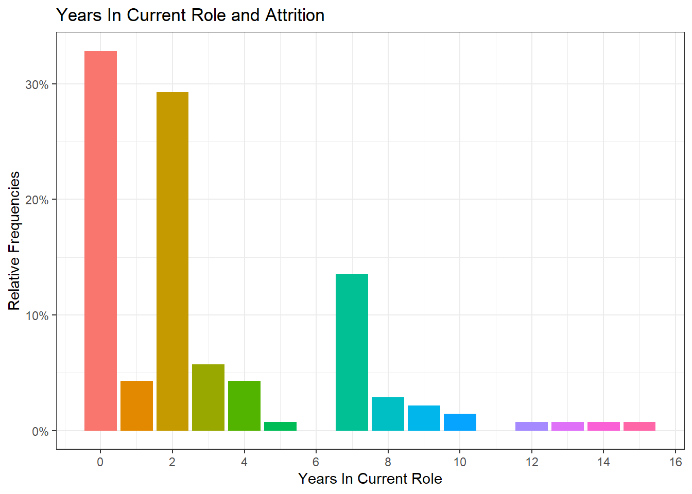
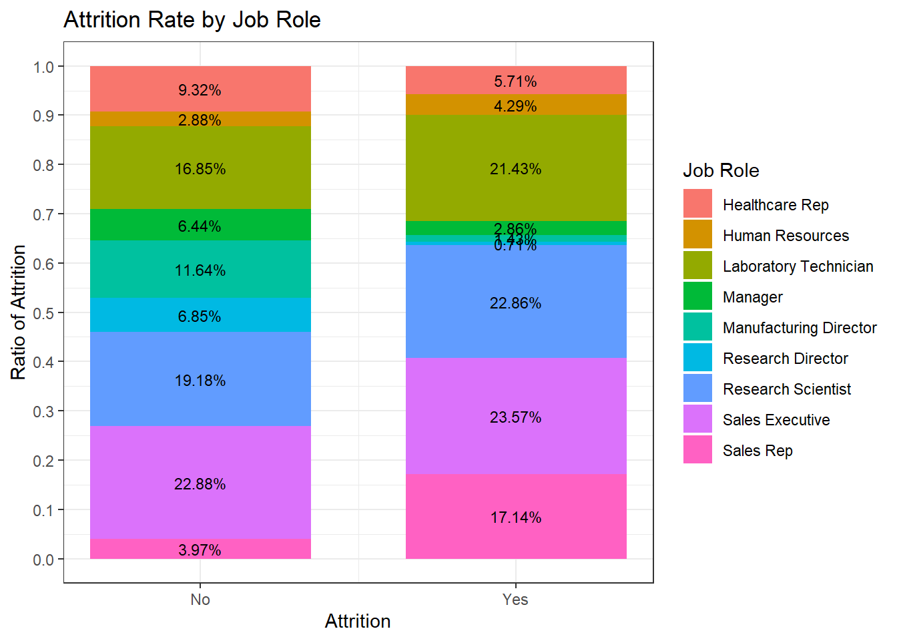
## [,1]
## Age -0.105969885
## Attrition 0.090538602
## BusinessTravel -0.024285473
## DailyRate 0.006317723
## Department 0.666858216
## DistanceFromHome -0.012799586
## Education 0.063075019
## EducationField -0.018664925
## EmployeeCount NA
## EmployeeNumber -0.051991261
## EnvironmentSatisfaction -0.051917531
## Gender -0.017882143
## HourlyRate -0.018204832
## ID -0.069017184
## JobInvolvement -0.011426141
## JobLevel -0.074299446
## JobSatisfaction 0.008906795
## MaritalStatus 0.048785430
## MonthlyIncome -0.075165525
## MonthlyRate -0.013817053
## NumCompaniesWorked -0.008968013
## Over18 NA
## OverTime 0.080699746
## PercentSalaryHike -0.004581115
## PerformanceRating -0.030687047
## RelationshipSatisfaction -0.021511456
## StandardHours NA
## StockOptionLevel -0.031362324
## TotalWorkingYears -0.133122913
## TrainingTimesLastYear -0.034165342
## WorkLifeBalance 0.025982297
## YearsAtCompany -0.091223937
## YearsInCurrentRole -0.035873768
## YearsSinceLastPromotion -0.043979111
## YearsWithCurrManager -0.048441140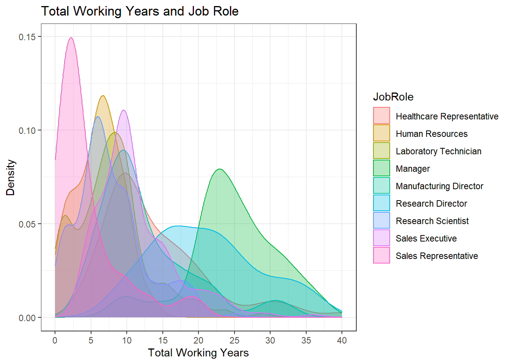
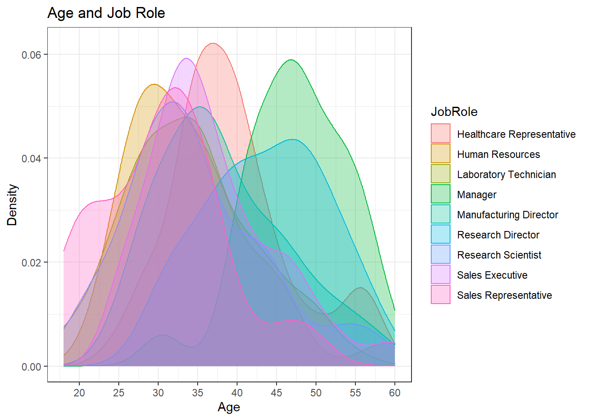
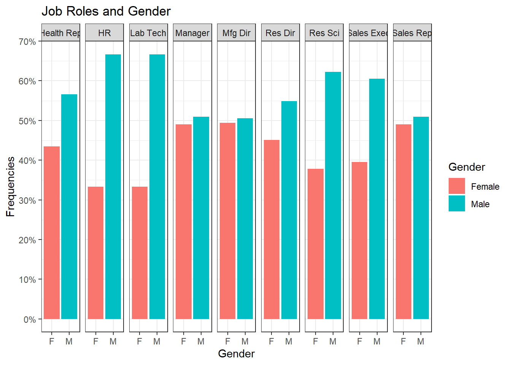
## Job Role Attrition Rate (%) % Who Work Overtime Avg. Age Avg. Educ. Level
## 1 Healthcare Representative 10.53% 28.95% 39.25 2.87
## 2 Human Resources 22.22% 22.22% 34.11 2.56
## 3 Laboratory Technician 19.61% 21.57% 34.13 2.71
## 5 Manufacturing Director 2.30% 26.44% 38.25 2.82
## 6 Research Director 1.96% 31.37% 43.69 3.33
## 7 Research Scientist 18.60% 37.79% 34.76 2.94
## 8 Sales Executive 16.50% 29.50% 36.70 3.08
## 9 Sales Representative 45.28% 33.96% 30.49 2.45
## Enviro. Sat. Job Sat. Mo. Inc. Co. Work For Total Work Yrs Yrs at Co. Yrs In Role Yrs Since Promo.
## 1 2.75 2.83 7,435 2.63 13.76 8.74 4.80 3.07
## 2 2.70 2.56 3,285 2.15 6.11 4.59 2.70 1.26
## 3 2.79 2.69 3,222 2.58 7.88 5.33 3.31 1.46
## 5 3.00 2.72 7,505 2.67 12.40 7.90 5.47 2.32
## 6 2.45 2.49 15,750 3.73 20.98 10.24 5.80 2.63
## 7 2.63 2.80 3,259 2.80 7.74 5.11 3.20 1.56
## 8 2.64 2.73 6,892 2.77 11.12 7.54 4.75 2.51
## 9 2.66 2.70 2,653 1.62 4.43 2.92 2.11 1.15| Job Role | Attrition Rate (%) | % Who Work Overtime | Avg. Age | Avg. Educ. Level | Enviro. Sat. | Job Sat. | Mo. Inc. | Co. Work For | Total Work Yrs | Yrs at Co. | Yrs In Role | Yrs Since Promo. |
|---|---|---|---|---|---|---|---|---|---|---|---|---|
| Healthcare Representative | 10.53% | 28.95% | 39.25 | 2.87 | 2.75 | 2.83 | 7,435 | 2.63 | 13.76 | 8.74 | 4.80 | 3.07 |
| Human Resources | 22.22% | 22.22% | 34.11 | 2.56 | 2.70 | 2.56 | 3,285 | 2.15 | 6.11 | 4.59 | 2.70 | 1.26 |
| Laboratory Technician | 19.61% | 21.57% | 34.13 | 2.71 | 2.79 | 2.69 | 3,222 | 2.58 | 7.88 | 5.33 | 3.31 | 1.46 |
| Manager | 7.84% | 19.61% | 47.55 | 3.06 | 2.63 | 2.51 | 17,197 | 3.45 | 24.69 | 13.78 | 6.43 | 4.49 |
| Manufacturing Director | 2.30% | 26.44% | 38.25 | 2.82 | 3.00 | 2.72 | 7,505 | 2.67 | 12.40 | 7.90 | 5.47 | 2.32 |
| Research Director | 1.96% | 31.37% | 43.69 | 3.33 | 2.45 | 2.49 | 15,750 | 3.73 | 20.98 | 10.24 | 5.80 | 2.63 |
| Research Scientist | 18.60% | 37.79% | 34.76 | 2.94 | 2.63 | 2.80 | 3,259 | 2.80 | 7.74 | 5.11 | 3.20 | 1.56 |
| Sales Executive | 16.50% | 29.50% | 36.70 | 3.08 | 2.64 | 2.73 | 6,892 | 2.77 | 11.12 | 7.54 | 4.75 | 2.51 |
| Sales Representative | 45.28% | 33.96% | 30.49 | 2.45 | 2.66 | 2.70 | 2,653 | 1.62 | 4.43 | 2.92 | 2.11 | 1.15 |
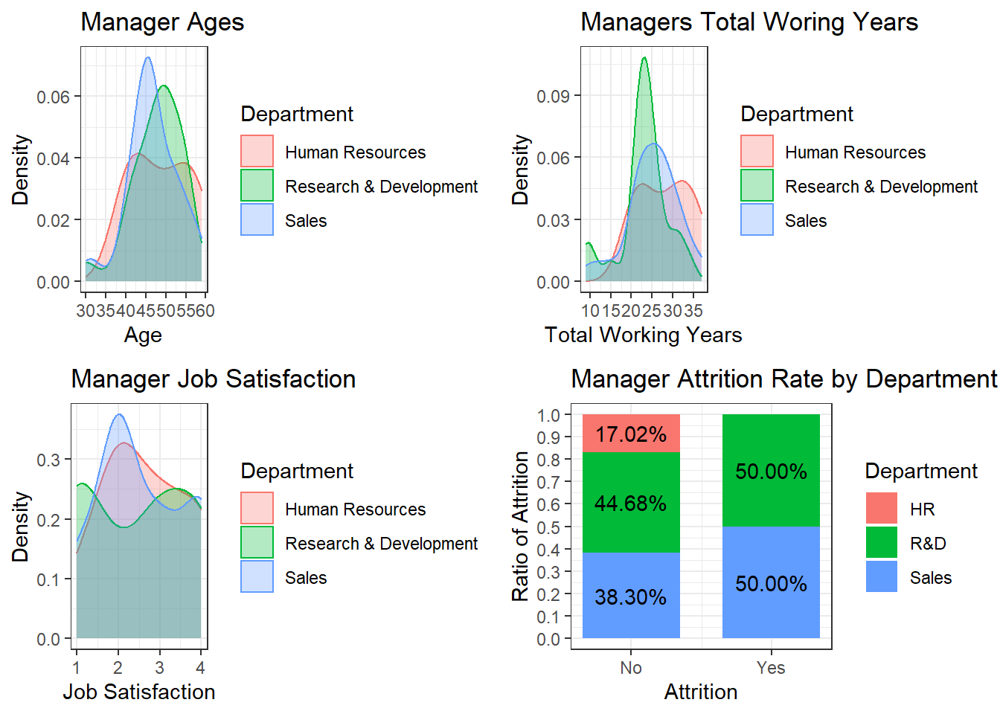
#### The majority of the manager ages fall between 40-55 and total working years between 20-30. The bottom left graph would indicate that job satisfaction is fairly even across the board with HR and Sales being primarily 2’s. There is more variation in the Research and Development department with most of the job satisfaction either being a 1 or a 3. #### The bottom right graph shows attrition rates among managers by department. None of the HR Managers left the company in this dataset. Granted there were only 8 in the entire dataset it is still an interesting observation.## 'data.frame': 870 obs. of 38 variables:
## $ ID : int 1 2 3 4 5 6 7 8 9 10 ...
## $ Age : int 32 40 35 32 24 27 41 37 34 34 ...
## $ Attrition : int 1 1 1 1 1 1 1 1 1 1 ...
## $ BusinessTravel : num 3 3 2 3 2 2 3 3 3 2 ...
## $ DailyRate : int 117 1308 200 801 567 294 1283 309 1333 653 ...
## $ Department : num 3 2 2 3 2 2 2 3 3 2 ...
## $ DistanceFromHome : int 13 14 18 1 2 10 5 10 10 10 ...
## $ Education : int 4 3 2 4 1 2 5 4 4 4 ...
## $ EducationField : num 2 4 2 3 6 2 4 2 2 6 ...
## $ EmployeeCount : int 1 1 1 1 1 1 1 1 1 1 ...
## $ EmployeeNumber : int 859 1128 1412 2016 1646 733 1448 1105 1055 1597 ...
## $ EnvironmentSatisfaction : int 2 3 3 3 1 4 2 4 3 4 ...
## $ Gender : num 2 2 2 1 1 2 2 1 1 2 ...
## $ HourlyRate : int 73 44 60 48 32 32 90 88 87 92 ...
## $ JobInvolvement : int 3 2 3 3 3 3 4 2 3 2 ...
## $ JobLevel : int 2 5 3 3 1 3 1 2 1 2 ...
## $ JobRole : num 8 6 5 8 7 5 7 8 9 1 ...
## $ JobSatisfaction : int 4 3 4 4 4 1 3 4 3 3 ...
## $ MaritalStatus : num 1 3 3 2 3 1 2 1 2 2 ...
## $ MonthlyIncome : int 4403 19626 9362 10422 3760 8793 2127 6694 2220 5063 ...
## $ MonthlyRate : int 9250 17544 19944 24032 17218 4809 5561 24223 18410 15332 ...
## $ NumCompaniesWorked : int 2 1 2 1 1 1 2 2 1 1 ...
## $ Over18 : num 1 1 1 1 1 1 1 1 1 1 ...
## $ OverTime : num 1 1 1 1 2 1 2 2 2 1 ...
## $ PercentSalaryHike : int 11 14 11 19 13 21 12 14 19 14 ...
## $ PerformanceRating : int 3 3 3 3 3 4 3 3 3 3 ...
## $ RelationshipSatisfaction: int 3 1 3 3 3 3 1 3 4 2 ...
## $ StandardHours : int 80 80 80 80 80 80 80 80 80 80 ...
## $ StockOptionLevel : int 1 0 0 2 0 2 0 3 1 1 ...
## $ TotalWorkingYears : int 8 21 10 14 6 9 7 8 1 8 ...
## $ TrainingTimesLastYear : int 3 2 2 3 2 4 5 5 2 3 ...
## $ WorkLifeBalance : int 2 4 3 3 3 2 2 3 3 2 ...
## $ YearsAtCompany : int 5 20 2 14 6 9 4 1 1 8 ...
## $ YearsInCurrentRole : int 2 7 2 10 3 7 2 0 1 2 ...
## $ YearsSinceLastPromotion : int 0 4 2 5 1 1 0 0 0 7 ...
## $ YearsWithCurrManager : int 3 9 2 7 3 7 3 0 0 7 ...
## $ JobRole_short : Factor w/ 9 levels "Health Rep","HR",..: 8 6 5 8 7 5 7 8 9 1 ...
## $ Gender_short : Factor w/ 2 levels "F","M": 2 2 2 1 1 2 2 1 1 2 ...## Confusion Matrix and Statistics
##
##
## 1 2
## 1 201 11
## 2 23 26
##
## Accuracy : 0.8697
## 95% CI : (0.8227, 0.9081)
## No Information Rate : 0.8582
## P-Value [Acc > NIR] : 0.33494
##
## Kappa : 0.5285
##
## Mcnemar's Test P-Value : 0.05923
##
## Sensitivity : 0.8973
## Specificity : 0.7027
## Pos Pred Value : 0.9481
## Neg Pred Value : 0.5306
## Prevalence : 0.8582
## Detection Rate : 0.7701
## Detection Prevalence : 0.8123
## Balanced Accuracy : 0.8000
##
## 'Positive' Class : 1
## 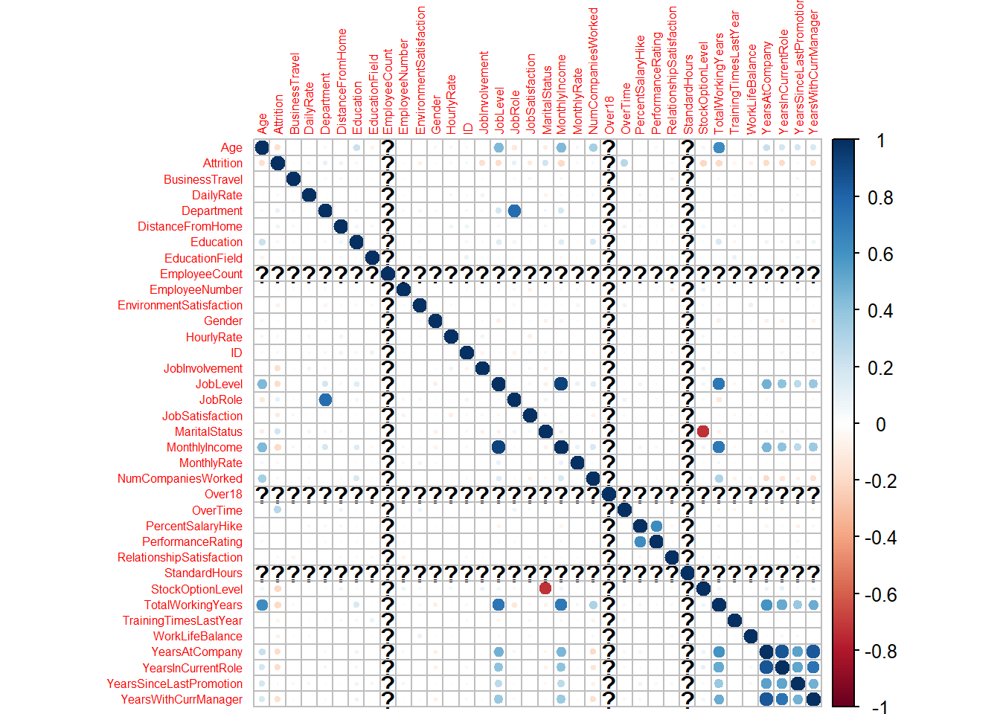
## [,1]
## Age 4.842883e-01
## Attrition -1.549150e-01
## BusinessTravel 6.270690e-02
## DailyRate 8.790339e-05
## Department 4.511141e-02
## DistanceFromHome -6.667155e-03
## Education 1.271314e-01
## EducationField -3.953148e-02
## EmployeeCount NA
## EmployeeNumber 3.420305e-02
## EnvironmentSatisfaction -1.687744e-02
## Gender -5.515709e-02
## HourlyRate 2.391151e-03
## ID -5.163903e-02
## JobInvolvement 4.473792e-04
## JobLevel 9.516400e-01
## JobRole -7.516553e-02
## JobSatisfaction -5.314853e-02
## MaritalStatus -7.167183e-02
## MonthlyRate 6.459407e-02
## NumCompaniesWorked 1.558943e-01
## Over18 NA
## OverTime -2.526885e-02
## PercentSalaryHike -5.386594e-02
## PerformanceRating -4.313100e-02
## RelationshipSatisfaction -3.884678e-03
## StandardHours NA
## StockOptionLevel 1.888872e-02
## TotalWorkingYears 7.785112e-01
## TrainingTimesLastYear -3.901457e-02
## WorkLifeBalance 2.080489e-02
## YearsAtCompany 4.913790e-01
## YearsInCurrentRole 3.618405e-01
## YearsSinceLastPromotion 3.159116e-01
## YearsWithCurrManager 3.284875e-01## JobLevel TotalWorkingYears YearsWithCurrManager
## 2.530831 2.851629 1.316559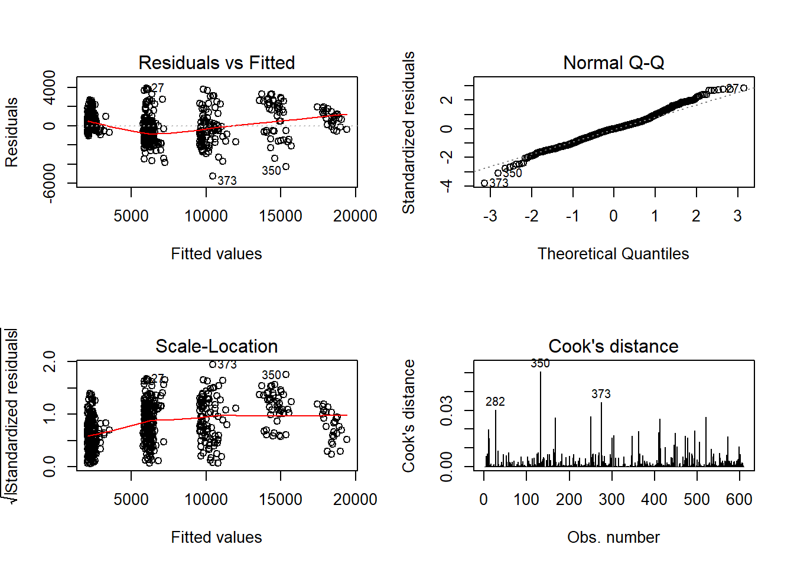
##
## Call:
## lm(formula = MonthlyIncome ~ JobLevel + TotalWorkingYears + YearsWithCurrManager,
## data = trainMIR)
##
## Residuals:
## Min 1Q Median 3Q Max
## -5241.1 -878.2 -12.6 731.6 3923.6
##
## Coefficients:
## Estimate Std. Error t value Pr(>|t|)
## (Intercept) -1651.20 121.42 -13.599 < 2e-16 ***
## JobLevel 3711.38 80.50 46.105 < 2e-16 ***
## TotalWorkingYears 73.45 12.26 5.993 3.54e-09 ***
## YearsWithCurrManager -72.25 17.92 -4.031 6.26e-05 ***
## ---
## Signif. codes: 0 '***' 0.001 '**' 0.01 '*' 0.05 '.' 0.1 ' ' 1
##
## Residual standard error: 1388 on 605 degrees of freedom
## Multiple R-squared: 0.9131, Adjusted R-squared: 0.9126
## F-statistic: 2118 on 3 and 605 DF, p-value: < 2.2e-16## [1] 1382.998